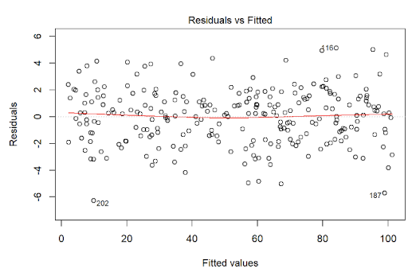
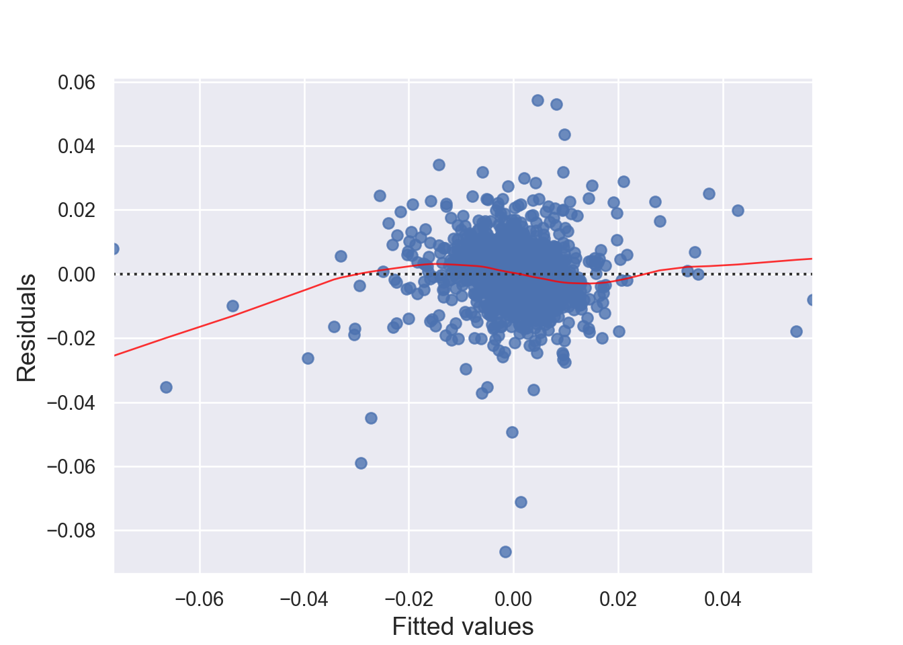
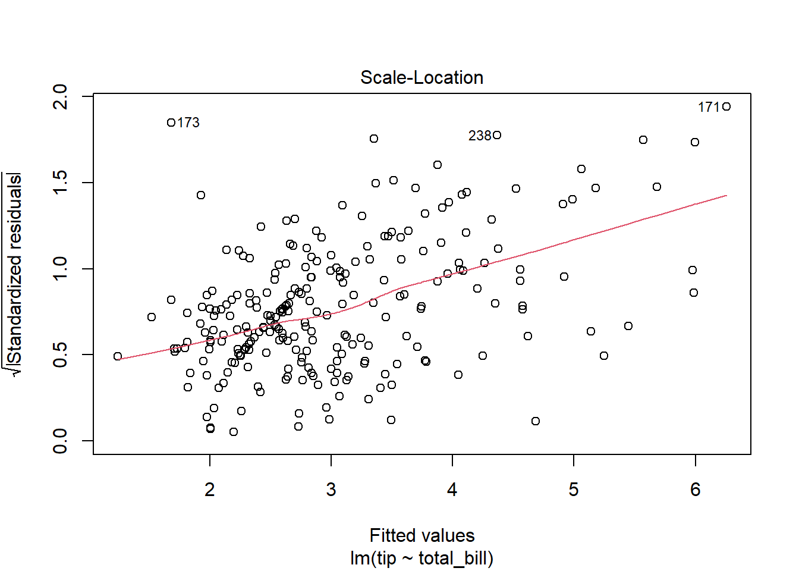
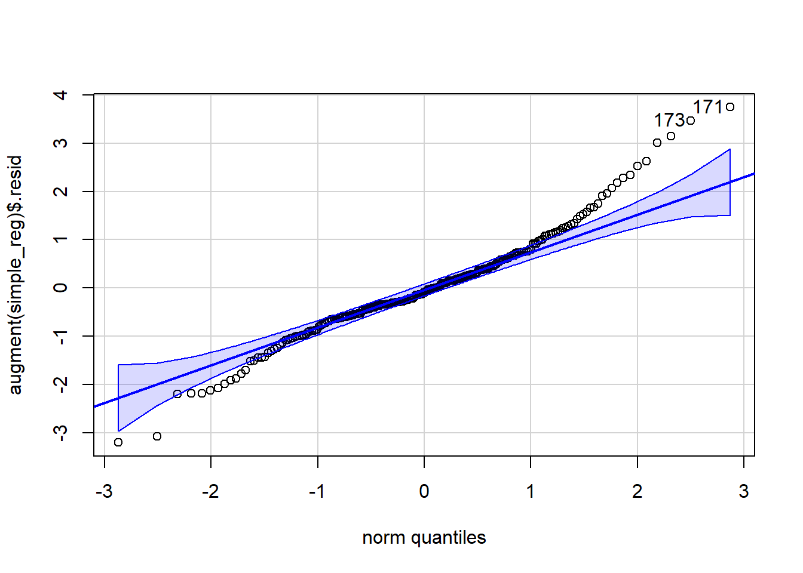

# loading necessary packages
library(tidyverse)
library(broom)
library(reshape2) # for tips data 7 Predictive Modeling - Linear Regression
Learning Objectives of the Chapter
At the End of the Chapter, Students should be Able to -
Learn about Linear Regression
Identify Linear Relation between Variables
Build Linear Regression Model between Variables
Learn about How to Evaluate the Fitness of Linear Models
Evaluate the Assumptions of Linear Regressions
Build Multiple Regression Models and Evaluate them
7.1 Introduction
Discussion on predictive analytics.
7.2 Regression Analysis
7.2.1 Simple Linear Regression
Regression analysis is one of very useful predictive modeling techniques that identify the relationship between two or more variables. The objective of linear regression is to identify a linear line of best fit that can predict the outcome variable (target variable/dependent variable/response variable) for one or more independent variables(predictors). For example, we can draw a scatter diagram to see the relation between tip and total bill in restaurant. Figure 7.1 and Figure 7.2 show the relationship between tip and total bill in R and Python respectively. It is clear that there exists a positive relationship between tip and total bill and it makes sense because higher bill generates higher tips. Similarly, there is positive relationship between size of the diners and tips because when there are more people in a group to dine, the higher the bill and tips (Figure 7.3 and Figure 7.4). The equation of a simple linear regression is - \[y= mX + C\]
where \(y\) = Target variable (Dependent variable); \(m\) = slope or rate of change; \(X\) = predictor or independent variable; and \(C\) = intercept or constant.
# loading the dataset
data ("tips")
glimpse(as_tibble(tips))Rows: 244
Columns: 7
$ total_bill <dbl> 16.99, 10.34, 21.01, 23.68, 24.59, 25.29, 8.77, 26.88, 15.0…
$ tip <dbl> 1.01, 1.66, 3.50, 3.31, 3.61, 4.71, 2.00, 3.12, 1.96, 3.23,…
$ sex <fct> Female, Male, Male, Male, Female, Male, Male, Male, Male, M…
$ smoker <fct> No, No, No, No, No, No, No, No, No, No, No, No, No, No, No,…
$ day <fct> Sun, Sun, Sun, Sun, Sun, Sun, Sun, Sun, Sun, Sun, Sun, Sun,…
$ time <fct> Dinner, Dinner, Dinner, Dinner, Dinner, Dinner, Dinner, Din…
$ size <int> 2, 3, 3, 2, 4, 4, 2, 4, 2, 2, 2, 4, 2, 4, 2, 2, 3, 3, 3, 3,…# loading necessary modules
import pandas as pd
import seaborn as sns
import matplotlib.pyplot as plt
sns.set_theme(style="darkgrid")# loading the dataset
tips = sns.load_dataset("tips")
tips.head() total_bill tip sex smoker day time size
0 16.99 1.01 Female No Sun Dinner 2
1 10.34 1.66 Male No Sun Dinner 3
2 21.01 3.50 Male No Sun Dinner 3
3 23.68 3.31 Male No Sun Dinner 2
4 24.59 3.61 Female No Sun Dinner 4ggplot(tips, aes (x = total_bill, y = tip)) +
geom_point()
sns.set_theme(style="darkgrid")
sns.scatterplot(data = tips, x = "total_bill", y = "tip")
ggplot(tips, aes (x = size, y = tip)) +
geom_point()
sns.set_theme(style="darkgrid")
sns.scatterplot(data = tips, x = "size", y = "tip")
Now we can quantify these relationships using linear regression in which we will try to draw a line that will help us to idenfity the relation between the variables. For example, in Figure 7.5, we can see the linear line that shows the relation between horsepower and MPG. The regression equation we find is y = 0.92 + 0.11x, where \(y\) is tips, \(x\) is total bill, \(0.92\) is intercept (or constant), and \(0.11\) is slope, which means one unit change of total bill results in $0.11 increase of tips and the value of tips is 0.92 when total bill is 0. Figure 7.6 shows the same results.
library(ggpubr)
ggplot(tips, aes (x = total_bill, y = tip)) +
geom_point() +
geom_smooth(method = "lm") +
labs(x = "Total Bill", y = "Tip") +
stat_regline_equation(label.x = 20, label.y = 9 )
# Model Results
simple_reg = lm(tip ~ total_bill, data = tips)
summary(simple_reg)
Call:
lm(formula = tip ~ total_bill, data = tips)
Residuals:
Min 1Q Median 3Q Max
-3.1982 -0.5652 -0.0974 0.4863 3.7434
Coefficients:
Estimate Std. Error t value Pr(>|t|)
(Intercept) 0.920270 0.159735 5.761 2.53e-08 ***
total_bill 0.105025 0.007365 14.260 < 2e-16 ***
---
Signif. codes: 0 '***' 0.001 '**' 0.01 '*' 0.05 '.' 0.1 ' ' 1
Residual standard error: 1.022 on 242 degrees of freedom
Multiple R-squared: 0.4566, Adjusted R-squared: 0.4544
F-statistic: 203.4 on 1 and 242 DF, p-value: < 2.2e-16broom::tidy(simple_reg)# A tibble: 2 × 5
term estimate std.error statistic p.value
<chr> <dbl> <dbl> <dbl> <dbl>
1 (Intercept) 0.920 0.160 5.76 2.53e- 8
2 total_bill 0.105 0.00736 14.3 6.69e-34broom::glance(simple_reg)# A tibble: 1 × 12
r.squared adj.r.squared sigma statistic p.value df logLik AIC BIC
<dbl> <dbl> <dbl> <dbl> <dbl> <dbl> <dbl> <dbl> <dbl>
1 0.457 0.454 1.02 203. 6.69e-34 1 -351. 707. 718.
# ℹ 3 more variables: deviance <dbl>, df.residual <int>, nobs <int>broom::augment(simple_reg)# A tibble: 244 × 8
tip total_bill .fitted .resid .hat .sigma .cooksd .std.resid
<dbl> <dbl> <dbl> <dbl> <dbl> <dbl> <dbl> <dbl>
1 1.01 17.0 2.70 -1.69 0.00450 1.02 0.00625 -1.66
2 1.66 10.3 2.01 -0.346 0.00873 1.02 0.000510 -0.340
3 3.5 21.0 3.13 0.373 0.00418 1.02 0.000281 0.366
4 3.31 23.7 3.41 -0.0973 0.00489 1.02 0.0000223 -0.0954
5 3.61 24.6 3.50 0.107 0.00530 1.02 0.0000294 0.105
6 4.71 25.3 3.58 1.13 0.00567 1.02 0.00353 1.11
7 2 8.77 1.84 0.159 0.0104 1.02 0.000128 0.156
8 3.12 26.9 3.74 -0.623 0.00671 1.02 0.00127 -0.612
9 1.96 15.0 2.50 -0.540 0.00527 1.02 0.000743 -0.530
10 3.23 14.8 2.47 0.757 0.00540 1.02 0.00150 0.743
# ℹ 234 more rows# To run the regression model
from scipy import stats
import statsmodels.api as sm
import statsmodels.formula.api as smf
simple_reg = smf.ols('tip ~ total_bill', data = tips)
simple_reg_model = simple_reg.fit()
## adding fitted and residual to the dataframe
tips['fitted'] = simple_reg_model.fittedvalues
tips['residual'] = simple_reg_model.resid
tips.head() total_bill tip sex smoker day time size fitted residual
0 16.99 1.01 Female No Sun Dinner 2 2.704636 -1.694636
1 10.34 1.66 Male No Sun Dinner 3 2.006223 -0.346223
2 21.01 3.50 Male No Sun Dinner 3 3.126835 0.373165
3 23.68 3.31 Male No Sun Dinner 2 3.407250 -0.097250
4 24.59 3.61 Female No Sun Dinner 4 3.502822 0.107178simple_re_parameters = simple_reg_model.params
# Visualization
plt.figure(figsize = (12, 8))
plt.scatter(tips['total_bill'], tips['tip'])
plt.xlabel("Total Bill")
plt.ylabel("Tip")
plt.plot(tips['total_bill'],
simple_re_parameters.Intercept+simple_re_parameters.total_bill*tips['total_bill'],
label = 'Y={:.4f}+{:.4f}X'.format(simple_re_parameters.Intercept, simple_re_parameters.total_bill),
color = "red")
plt.legend()
# Model Results
simple_reg_model.summary()| Dep. Variable: | tip | R-squared: | 0.457 |
| Model: | OLS | Adj. R-squared: | 0.454 |
| Method: | Least Squares | F-statistic: | 203.4 |
| Date: | Mon, 10 Mar 2025 | Prob (F-statistic): | 6.69e-34 |
| Time: | 12:41:36 | Log-Likelihood: | -350.54 |
| No. Observations: | 244 | AIC: | 705.1 |
| Df Residuals: | 242 | BIC: | 712.1 |
| Df Model: | 1 | ||
| Covariance Type: | nonrobust |
| coef | std err | t | P>|t| | [0.025 | 0.975] | |
| Intercept | 0.9203 | 0.160 | 5.761 | 0.000 | 0.606 | 1.235 |
| total_bill | 0.1050 | 0.007 | 14.260 | 0.000 | 0.091 | 0.120 |
| Omnibus: | 20.185 | Durbin-Watson: | 2.151 |
| Prob(Omnibus): | 0.000 | Jarque-Bera (JB): | 37.750 |
| Skew: | 0.443 | Prob(JB): | 6.35e-09 |
| Kurtosis: | 4.711 | Cond. No. | 53.0 |
Notes:
[1] Standard Errors assume that the covariance matrix of the errors is correctly specified.
7.2.2 Evaluating Linear Regression Models - Assessing the Fitness
When we build a linear regression model, we need to check the accuracy of the model by evaluating different parameters of the model. Some of the parameters that need to be evaluated are discussed below -
7.2.2.1 F-statistic and Overall P-value
The F-statistic of the model tests whether the linear model provides a better fit of the data than the model that contains no independent variables. The null hypothesis is that the model as a whole does not explain a significant amount of variance of the data.
7.2.2.2 Coefficient of Determination (\(R^2\)) and Adjusted \(R^2\)
Coefficient of determination is a statistical metric that measures the proportion of the variance of the target variable explained by the independent variables. The coefficient of determination is represented by \(R^2\). The value of \(R^2\) ranges between \(0\) and \(1\), where \(0\) indicates poor fit and \(1\) indicates perfect fit. There is a problem with \(R^2\); it increases as the number of independent variable increases. Therefore, when we compare models with different numbers of independent variables, adjuted \(R^2\) is used to evaluate the model because it penalizes models with a large number of predictors.
7.2.2.3 P-value of Parameter Estimates
In addition to overall p-value associated with the model, linear regression models generate p-value for each predicators (parameter estimates). This p-value tests the null hypothesis that the coefficient is zero (or it does not have any effect on outcome variable). A low p-value (<0.05) indicates that we can reject the null hypothesis, meaning that a predictor with a low p-value should be included in the model because it has statistically significant effect on the target variable.
7.2.2.4 Residual Standard Error (RSE)
Residual Standard Error (RSE) measures how far away an observation is from the prediction (regression line). In another words, it is mean (average) distance between the actual outcome and regression line. For example, ?fig-r-relation-KO-SPY regression equation’s RSE is 0.01034, which means the regression model predicts CocaCola’s return with an avearagr error 0.01034.
7.2.3 Assumptions of Linear Regression
Linear regression follows some assumptions. After fitting a regression model, we should check the assumptions of the model.
- Linearity (Linear Relationship):
There must be a linear relationship between the outcome variable (y) and predictors (x). Figure 7.7 shows what we want to see and Figure 7.8 and Figure 7.9 show what we see from one of our models.

plot(lm(tip ~ total_bill, data = tips),1)#######################################################
# Testing Model Assumptions
#######################################################
import numpy as np
import pandas as pd
import statsmodels.api as sm
import seaborn as sns
import matplotlib.pyplot as plt
from statsmodels.stats.outliers_influence import variance_inflation_factor
from statsmodels.stats.stattools import durbin_watson
# Example Data
import pandas as pd
import statsmodels.api as sm
# Assuming your dataset is named 'tips'
# Convert categorical variables into dummy variables
tips = sns.load_dataset("tips")
tips = pd.get_dummies(tips, columns=['sex', 'smoker', 'day'], drop_first=True,
dtype = int)
# Now, you can add the constant
X = sm.add_constant(tips[['total_bill', 'size', 'sex_Female', 'smoker_No', 'day_Fri', 'day_Sat', 'day_Sun']])
y = tips['tip'] # Assuming 'tip' is the dependent variable
# Fit the model
model = sm.OLS(y, X).fit()
# Print summary
print(model.summary()) OLS Regression Results
==============================================================================
Dep. Variable: tip R-squared: 0.470
Model: OLS Adj. R-squared: 0.454
Method: Least Squares F-statistic: 29.90
Date: Mon, 10 Mar 2025 Prob (F-statistic): 2.12e-29
Time: 12:41:37 Log-Likelihood: -347.49
No. Observations: 244 AIC: 711.0
Df Residuals: 236 BIC: 739.0
Df Model: 7
Covariance Type: nonrobust
==============================================================================
coef std err t P>|t| [0.025 0.975]
------------------------------------------------------------------------------
const 0.5917 0.255 2.318 0.021 0.089 1.095
total_bill 0.0943 0.010 9.922 0.000 0.076 0.113
size 0.1770 0.089 1.987 0.048 0.001 0.353
sex_Female 0.0324 0.141 0.230 0.819 -0.246 0.311
smoker_No 0.0849 0.146 0.581 0.561 -0.203 0.372
day_Fri 0.1198 0.279 0.430 0.668 -0.429 0.669
day_Sat -0.0261 0.175 -0.149 0.882 -0.371 0.319
day_Sun 0.0701 0.181 0.386 0.700 -0.287 0.428
==============================================================================
Omnibus: 27.933 Durbin-Watson: 2.095
Prob(Omnibus): 0.000 Jarque-Bera (JB): 52.677
Skew: 0.608 Prob(JB): 3.64e-12
Kurtosis: 4.924 Cond. No. 117.
==============================================================================
Notes:
[1] Standard Errors assume that the covariance matrix of the errors is correctly specified.# 1. Linearity: Check Residual vs Fitted Plot ------------------ (1)
fitted_values = model.fittedvalues
residuals = model.resid
sns.residplot(x=fitted_values, y=residuals, lowess=True, line_kws={'color': 'red'})
plt.xlabel('Fitted values')
plt.ylabel('Residuals')
plt.title('Residuals vs Fitted')
plt.axhline(0, color='black', linestyle='--')
plt.show()

- Independence:
Indpendence means that each observation (data point) is independent of the others, meaning that the error terms in the model are not correlated with each other and the occurrence of one observation does not influence the probability of another observation occurring; essentially, each data point should be considered a separate, unrelated event from the others. We can check this assumption by Durbin-Watson test. The null hypothesis (H0) is there is no correlation among the residuals. Basically, the test detects autocorrelation in the residuals of a linear regression model. The test statistic is a value between 0 and 4, with the following interpretations: 2: No autocorrelation; < 2: Positive autocorrelation; > 2: Negative autocorrelation. To solve the independence issue, it is suggested that for positive serial correlation, consider adding lags of the dependent and/or independent variable to the model. For negative serial correlation, check to make sure that none of your variables are overdifferenced, and For seasonal correlation, consider adding seasonal dummy variables to the model. However, as a rule of thumb, test statistic values between the range of 1.5 and 2.5 are considered normal. One limitation of the DW test is that it can only test for first-order serial correlation.
Alternatively, we can can visually examine a scatterplot of the residuals (errors) against the fitted values (Figure 7.8 and Figure 7.9); if there is no clear pattern, it suggests that the independence assumption is likely satisfied. Independence assmption is important because violating it can lead to unreliable hypothesis tests and confidence intervals.
# 4. Independence: Durbin-Watson Test --------------------------- (4)
library(car)
durbinWatsonTest(lm(tip ~ total_bill+size, data = tips)) lag Autocorrelation D-W Statistic p-value
1 -0.05550935 2.100257 0.4
Alternative hypothesis: rho != 0# 4. Independence: Durbin-Watson Test --------------------------- (4)
from statsmodels.stats.stattools import durbin_watson
dw_stat = durbin_watson(model.resid)
print(f'Durbin-Watson statistic: {dw_stat}')Durbin-Watson statistic: 2.094763480658097- Residual Error:
The errors have a mean (expected) value zero (\(0\)), constant varianace (Homoscedasticity), and are independent from each other (otherwise auto-correlation problem) and predictor variables. We can check the assumption - expected value of errors are equal to 0 - by looking at Figure 7.8 and Figure 7.9. If there is a pattern in the plot, the assumption is violated.
The assumption homoscedasticity is tested using the Scale-Location plot, in which fitted values are compared with square root of standardized residuals. Theoretically, we want to see Figure 7.10. Figure 7.11 and Figure 7.12 show Scale-Location plot (also called spread-location plot) of our model. From Figure 7.11 and Figure 7.12, it is clear that residual plots have a trend (are not all equally spread out). Thus, the assumption is violated. One solution to the problem is that using log or square root transformation of outcome variable. Moreover, we can use Non-Constant Error Variance (NVC) test to test the assumption. If p-value of the test is less than 0.05, then null hypothesis is rejected, meaning that homoscedasticity is violated. Moreover, Breusch-Pagan test or White test can also be used to test homoscedasticity.
Finally, testing the assumption - errors are independent from each other and predictors - requires the knowledge of study design and data collection to establish the validity of this assumption. Violation of this assumption is also called endogeneity problem of the model, which is the same as assumption 6 - No Endogeneity below.
# 3. Homoscedasticity: Scale-Location Plot ----------------------- (3)
# Scale-Location Plot
plot(lm(tip ~ total_bill, data = tips),3)
# Non-Constant Error Variance Test
ncvTest (lm(tip ~ total_bill, data = tips))Non-constant Variance Score Test
Variance formula: ~ fitted.values
Chisquare = 88.84011, Df = 1, p = < 2.22e-16

# 3. Homoscedasticity: Scale-Location Plot ----------------------- (3)
standardized_residuals = residuals / np.std(residuals)
sns.scatterplot(x=fitted_values, y=np.sqrt(np.abs(standardized_residuals)), alpha=0.7)
plt.xlabel('Fitted values')
plt.ylabel('Sqrt(|Standardized Residuals|)')
plt.title('Scale-Location Plot')
plt.axhline(0, color='black', linestyle='--')
plt.show()
- Normality:
The residuals are normally distributed. We can test this assumption by Q-Q plots (also called Quantile-Quantile plot) of the residuals. Figure 7.13 and Figure 7.14 show a QQ plot. The dots do not lie perfectly along the straight line. Moreover, Kolmogorov-Smirnov (KS) test can be used to check the normality assumption. KS tests whether a sample comes from a certain distribution. From the KS result below, we can see test statistic is 0.484 and p-value is 2.2e-16, thus rejecting null hypothesis and indicating that sample data does not come from a normal distribution.
###################################################
## Simple Linear Regression model
###################################################
simple_reg = lm (tip ~ total_bill, data = tips)
#######################################
# Drawing QQ Plot
########################################
## qqnorm () function
#qqnorm((df_stockR$residual))
## qqline () function
#qqline(df_stockR$residual)
# qqPlot () function from car package
qqPlot(augment(simple_reg)$.resid) [1] 171 173#########################################
# Kolmogorov-Smirnov (KS) test
##########################################
library(stats)
ks.test(augment(simple_reg)$.resid, "pnorm")
Asymptotic one-sample Kolmogorov-Smirnov test
data: augment(simple_reg)$.resid
D = 0.074052, p-value = 0.1376
alternative hypothesis: two-sided

# 2. Normality: Q-Q Plot for Residuals -------------------------- (2)
#######################################
# Drawing QQ Plot
########################################
sm.qqplot(residuals, line='s')
plt.title('Q-Q Plot')
plt.show()
#########################################
# Kolmogorov-Smirnov (KS) test
##########################################
from scipy.stats import kstest
ks_test = kstest(simple_reg_model.resid, "norm")
label_ks = ["KS Statistic", "P-value"]
for stat, value in zip(label_ks, ks_test[:2]):
print('{}: {:.5f}'.format(stat, value))KS Statistic: 0.07405
P-value: 0.13089- Multicollinearity:
There is little or no correlation between the predictor variables. It makes difficult to interpret the coefficients of the model. Variance Inflation Factor (VIF) can be used to test the multicollinearity. A value equal to or greater than 10 of VIF indicates multicollinearity in the data. We see the VIF of SPY and PEP is 1.84 and 1.84 respectively. Moreover, correlation matrix can also be used to identify the predictors that are highly correlated. Figure 7.15 and Figure 7.16 show a correlation plot of our stock returns data.
# 5. Multicollinearity: Variance Inflation Factor (VIF) ---------- (5)
## Variance Inflation Factor (VIF)
library(car)
vif(lm(tip ~ total_bill+size, data = tips))total_bill size
1.557586 1.557586 ## Correlation Matrix and Correlation Plot
# to get the function
source("http://www.sthda.com/upload/rquery_cormat.r")
rquery.cormat(tips|> select(tip, total_bill,size), type = c("lower"), graph = TRUE)$r size tip total_bill
size 1
tip 0.49 1
total_bill 0.6 0.68 1
## Correlation Matrix and Correlation Plot
### Correlation Matrix
correlation_matrix = tips[["tip", "total_bill", "size"]].corr()
print(correlation_matrix) tip total_bill size
tip 1.000000 0.675734 0.489299
total_bill 0.675734 1.000000 0.598315
size 0.489299 0.598315 1.000000### Correlation Plot
mask = np.triu(np.ones_like(tips[["tip", "total_bill", "size"]].corr()))
sns.heatmap(tips[["tip", "total_bill", "size"]].corr(),
annot=True, cmap="YlGnBu",
mask=mask)
## Variance Inflation Factor (VIF)
# 5. Multicollinearity: Variance Inflation Factor (VIF) ---------- (5)
vif_data = pd.DataFrame()
vif_data["feature"] = X.columns
from statsmodels.stats.outliers_influence import variance_inflation_factor
vif_data["VIF"] = [variance_inflation_factor(X.values, i) for i in range(X.shape[1])]
print(vif_data) feature VIF
0 const 15.215689
1 total_bill 1.665250
2 size 1.670404
3 sex_Female 1.070126
4 smoker_No 1.173230
5 day_Fri 1.301245
6 day_Sat 1.644496
7 day_Sun 1.649463- No Endogeneity:
There is no relation between the errors and the independent variables. :::
7.2.4 Multiple Linear Regression
Multiple regression analysis estimates the relationship between an outcome variable and two or more independent variables. More specifically, multiple regression analysis helps to understand how the value of the dependent variable changes when one of the independent variables varies, while the other independent variables remain constant.
We use Grunfeld dataset for multiple regressions. The dataset contains investment data for 11 US firms. The variables include - invest, which is Gross investment in 1947 dollars; value, which is market value as of Dec 31 in 1947 dollars; capital, which is stock of plant and equipment in 1947 dollars; firm, which include 11 US firms (General Motors, US Steel, General Electric, Chrysler, Atlantic Refining, IBM, Union Oil, Westinghouse, Goodyear, Diamond Match, American Steel); and year, which is 1935-1954. Our multiple regeression model is Equation 7.1 -
\[ invest_{it} = \beta_{0} + \beta_{1}value_{i} + \beta_{3}capital_{it} + \alpha_{it} + \delta_{t} + \epsilon_{it} \tag{7.1}\]
Where
\(invest_{it}\) is the gross investment of firm \(i\) in year \(t\)
\(value_{it}\) is the market value of assets of firm \(i\) in year \(t\)
\(capital_{it}\) is the stock value of plant and equipment of firm \(i\) in year \(t\)
\(alpha_{i}\) is the fixed effect for firm \(i\) (capturing unobserved firm-specific factors that don’t vary over time)
\(delta_{t}\) is the fixed effect for year \(t\) (capturing unobserved year-specific factors that are common to all firms in that year)
\(epsilon_{it}\) is the error term, which includes all other unobserved factors that affect investment but are not accounted for by the independent variables or the fixed effects.
In Table 7.1 and Table 7.2, we generate some multiple regression models.
#############################################################
## Grunfeld Data from AER Package
#############################################################
# Grunfeld data contains investment data for 11 US firms. The variables
# include - invest =
library(AER)
library(modelsummary)
library(kableExtra)
library(fixest)
data("Grunfeld", package = "AER")
models_r = list()
# Model (1)
models_r [['OLS_FYfe']] = feols(invest ~ value + capital | firm + year, data = Grunfeld)
# Model (2)
models_r [['OLS_FYfeC']] = feols(invest ~ value + capital | firm + year,
cluster = ~firm,
data = Grunfeld)
# Model (3)
models_r [['OLS_FYfeCtwo']] = feols(invest ~ value + capital | firm + year,
cluster = ~firm+year,
data = Grunfeld)
rows = tribble(
~term, ~'OLS_FYfe',~'OLS_FYfeC', ~'OLS_FYfeCtwo',
'Firm Fixed Effects', "YES", "YES", "YES",
"Year Fixed Effects", "YES", "YES", "YES"
)
attr(rows, 'position') = c (5,6)
modelsummary(models_r, fmt = 2,
estimate = "{estimate}{stars}",
statistic = 'statistic'
#,vcov = "robust" # robust clustering
#,vcov = ~firm # clusting by firm
#,vcov = vcovHAC
,stars = c ("*" = 0.10, "**" = 0.05, "***" = 0.01)
,coef_rename = c(
"value" = "VALUE",
"capital" = "CAPITAL"
)
#,gof_omit = 'DF|Deviance|AIC|BIC'
,gof_map = c("nobs", "r.squared", "adj.r.squared")
,add_rows = rows
#,notes = list(
#'Note: In all models both firm and year fixed effects are controlled and in models 2 and 3 starndard errors',
#'are clustered by firm (one-way cluster) and firm and year (two-way cluster) respectively. The numbers in parentheses indicate t values.')
#,title = "Title of the Table"
,output = "kableExtra"
) |>
# The line below is for styling the table, not necessary for regression table
#kableExtra::kbl() |>
kable_styling(full_width = TRUE) |>
row_spec(c(6,9), extra_css = "border-bottom: 1.25px solid") |>
footnote('In all models both firm and year fixed effects are controlled and in models 2 and 3 starndard errors are clustered by firm (one-way cluster) and firm and year (two-way cluster) respectively. The numbers in parentheses indicate t values.')| OLS_FYfe | OLS_FYfeC | OLS_FYfeCtwo | |
|---|---|---|---|
| VALUE | 0.12*** | 0.12*** | 0.12*** |
| (10.17) | (10.17) | (10.28) | |
| CAPITAL | 0.35*** | 0.35*** | 0.35*** |
| (7.34) | (7.34) | (8.07) | |
| Firm Fixed Effects | YES | YES | YES |
| Year Fixed Effects | YES | YES | YES |
| Num.Obs. | 220 | 220 | 220 |
| R2 | 0.953 | 0.953 | 0.953 |
| R2 Adj. | 0.945 | 0.945 | 0.945 |
| Note: | |||
| In all models both firm and year fixed effects are controlled and in models 2 and 3 starndard errors are clustered by firm (one-way cluster) and firm and year (two-way cluster) respectively. The numbers in parentheses indicate t values. |
import pandas as pd
import numpy as np
from statsmodels.datasets import grunfeld
data = grunfeld.load_pandas().data
data.year = data.year.astype(np.int64)
# Link for pyfixest -
# https://py-econometrics.github.io/pyfixest/quickstart.html
import pyfixest as pf
from pyfixest.estimation import feols
# Model (1)
fe_model1 = feols(
"invest ~ value + capital | firm + year",
data = data)
#fe_model1.summary()
#pf.etable(fe_model1)
#fe_model1.tidy()
#fe_model1.coefplot()
# Model (2)
fe_model2 = feols(
"invest ~ value + capital | firm + year",
vcov= {"CRV1": "firm"},
data = data)
# Model (3)
fe_model3 = feols(
"invest ~ value + capital | firm + year",
vcov= {"CRV1": "firm+year"},
data = data)
pf.etable([fe_model1, fe_model2, fe_model3]
#, type = "gt"
,coef_fmt= 'b \n (t)'
,signif_code= [0.01,0.05,0.10]
)| invest | |||
|---|---|---|---|
| (1) | (2) | (3) | |
| coef | |||
| value | 0.117*** (10.669) |
0.117*** (10.669) |
0.117*** (10.306) |
| capital | 0.351*** (7.701) |
0.351*** (7.701) |
0.351*** (8.091) |
| fe | |||
| year | x | x | x |
| firm | x | x | x |
| stats | |||
| Observations | 220 | 220 | 220 |
| S.E. type | by: firm | by: firm | by: firm+year |
| R2 | 0.953 | 0.953 | 0.953 |
| Significance levels: * p < 0.1, ** p < 0.05, *** p < 0.01. Format of coefficient cell: Coefficient (t-stats) | |||
7.2.4.1 Relation Between Tips and Total Bill in Restaurant
Here we run multiple linear regression models and evaluate the model assumptions.
# Loading Packages
library(AER)
library(modelsummary)
library(kableExtra)
library(fixest)# All models
models_r = list()
## Model ----------------------------------------- (1)
models_r[["Model1"]] = feols(tip ~ total_bill+size, data = tips)
## Model ----------------------------------------- (2)
tips = tips |>
mutate(Gender = if_else(sex == "Female", 0,1))
models_r[["Model2"]] = feols(tip ~ total_bill+size+Gender, data = tips)
## Model ----------------------------------------- (3)
models_r[["Model3"]] = feols(tip ~ total_bill+size+Gender+smoker, data = tips)
## Model ----------------------------------------- (4)
models_r[["Model4"]] = feols(tip ~ total_bill+size+Gender+smoker+time, data = tips)
## Model ----------------------------------------- (5)
tips = tips |>
mutate(day_Thur = if_else(day == "Thur", 1,0),
day_Fri = if_else(day == "Fri", 1, 0),
day_Sat = if_else(day == "Sat", 1, 0)
)
models_r[["Model5"]] = feols(tip ~ total_bill+size+Gender+smoker+time+day_Thur + day_Fri + day_Sat, data = tips)# Regression Table
modelsummary(models_r, fmt = 2,
estimate = "{estimate}{stars}",
statistic = "statistic"
,stars = c ("*" = 0.10, "**" = 0.05, "***" = 0.01)
,gof_map = c("nobs", "r.squared", "adj.r.squared")
,output = "kableExtra"
) |>
footnote('Numbers in parentheses are t values.') |>
kable_styling(full_width = TRUE)| Model1 | Model2 | Model3 | Model4 | Model5 | |
|---|---|---|---|---|---|
| (Intercept) | 0.67*** | 0.68*** | 0.72*** | 0.73*** | 0.78*** |
| (3.46) | (3.32) | (3.34) | (3.12) | (2.99) | |
| total_bill | 0.09*** | 0.09*** | 0.09*** | 0.09*** | 0.09*** |
| (10.17) | (10.10) | (10.00) | (9.90) | (9.84) | |
| size | 0.19** | 0.19** | 0.18** | 0.18** | 0.18* |
| (2.26) | (2.25) | (2.05) | (2.04) | (1.97) | |
| Gender | −0.03 | −0.03 | −0.03 | −0.03 | |
| (−0.19) | (−0.20) | (−0.20) | (−0.23) | ||
| smokerYes | −0.08 | −0.08 | −0.09 | ||
| (−0.61) | (−0.60) | (−0.59) | |||
| timeLunch | 0.00 | 0.07 | |||
| (−0.03) | (0.15) | ||||
| day_Thur | −0.14 | ||||
| (−0.29) | |||||
| day_Fri | 0.03 | ||||
| (0.08) | |||||
| day_Sat | −0.10 | ||||
| (−0.58) | |||||
| Num.Obs. | 244 | 244 | 244 | 244 | 244 |
| R2 | 0.468 | 0.468 | 0.469 | 0.469 | 0.470 |
| R2 Adj. | 0.463 | 0.461 | 0.460 | 0.458 | 0.452 |
| Note: | |||||
| Numbers in parentheses are t values. |
#######################################################
# Testing Model Assumptions
#######################################################
# 1. Linearity: Check Residual vs Fitted Plot ------------------ (1)
plot(lm(tip ~ total_bill+size+Gender+smoker+time+day_Thur + day_Fri + day_Sat, data = tips),1)# 2. Normality: Q-Q Plot for Residuals -------------------------- (2)
#######################################
# Drawing QQ Plot
########################################
qqPlot(augment(lm(tip ~ total_bill+size+Gender+smoker+time+day_Thur + day_Fri + day_Sat, data = tips))$.resid)[1] 171 173# 3. Homoscedasticity: Scale-Location Plot ----------------------- (3)
# Scale-Location Plot
plot(lm(tip ~ total_bill+size+Gender+smoker+time+day_Thur + day_Fri + day_Sat, data = tips),3)# 4. Independence: Durbin-Watson Test --------------------------- (4)
library(car)
durbinWatsonTest(lm(tip ~ total_bill+size+Gender+smoker+time+day_Thur + day_Fri + day_Sat, data = tips)) lag Autocorrelation D-W Statistic p-value
1 -0.05420024 2.096103 0.636
Alternative hypothesis: rho != 0# 5. Multicollinearity: Variance Inflation Factor (VIF) ---------- (5)
## Variance Inflation Factor (VIF)
library(car)
vif(lm(tip ~ total_bill+size+Gender+smoker+time+day_Thur + day_Fri + day_Sat, data = tips))total_bill size Gender smoker time day_Thur day_Fri
1.692370 1.679494 1.070126 1.178870 9.242900 9.808506 1.724116
day_Sat
1.468352 # loading the packages
import pandas as pd
import numpy as np
import matplotlib.pyplot as plt
import seaborn as sns# To run the regression model
from scipy import stats
import statsmodels.api as sm
import statsmodels.formula.api as smf
###################################################
# Multiple Linear Regression Model
###################################################
import pyfixest as pf
from pyfixest.estimation import feols
tips = sns.load_dataset("tips")
## Model ----------------------------------------- (1)
fe_model1 = feols("tip~total_bill+size", data = tips)
#fe_model1.summary()
fe_model1.tidy() Estimate Std. Error t value Pr(>|t|) 2.5% 97.5%
Coefficient
Intercept 0.668945 0.193609 3.455127 0.000650 0.287562 1.050327
total_bill 0.092713 0.009115 10.171867 0.000000 0.074759 0.110668
size 0.192598 0.085315 2.257502 0.024872 0.024540 0.360655#pf.etable(fe_model1)
#fe_model1.coefplot()
## Model ----------------------------------------- (2)
#tips['Gender'] = tips['sex'].map({'Female':0, 'Male':1})
fe_model2 = feols("tip~total_bill+size+sex", data = tips)
#fe_model2 = feols("tip~total_bill+size+Gender", data = tips)
#fe_model2.summary()
#fe_model2.tidy()
#pf.etable([fe_model1, fe_model2]
# ,coef_fmt= 'b \n (t)'
# ,signif_code= [0.01,0.05,0.10]
# )
## Model ----------------------------------------- (3)
fe_model3 = feols("tip~total_bill+size+sex+smoker", data = tips)
## Model ----------------------------------------- (4)
fe_model4 = feols("tip~total_bill+size+sex+smoker+time", data = tips)
## Model ----------------------------------------- (5)
tips = pd.get_dummies(tips, columns = ['day'],dtype = int) # adding the dummy variables of the day variable
## Model ----------------------------------------- (4)
fe_model5 = feols("tip~total_bill+size+sex+smoker+time+day_Thur + day_Fri + day_Sat", data = tips)
#fe_model5.summary()
#fe_model5.tidy()pf.etable([fe_model1, fe_model2, fe_model3,fe_model4, fe_model5]
,coef_fmt= 'b \n (t)'
,signif_code= [0.01,0.05,0.10]
)| tip | |||||
|---|---|---|---|---|---|
| (1) | (2) | (3) | (4) | (5) | |
| coef | |||||
| total_bill | 0.093*** (10.172) |
0.093*** (10.104) |
0.094*** (9.996) |
0.094*** (9.898) |
0.094*** (9.841) |
| size | 0.193** (2.258) |
0.193** (2.253) |
0.180** (2.049) |
0.180** (2.045) |
0.176* (1.966) |
| sex[T.Female] | 0.026 (0.193) |
0.027 (0.198) |
0.028 (0.201) |
0.032 (0.229) |
|
| smoker[T.No] | 0.084 (0.605) |
0.084 (0.605) |
0.086 (0.589) |
||
| time[T.Dinner] | 0.005 (0.033) |
-0.068 (-0.153) |
|||
| day_Thur | -0.137 (-0.290) |
||||
| day_Fri | 0.025 (0.079) |
||||
| day_Sat | -0.096 (-0.579) |
||||
| Intercept | 0.669*** (3.455) |
0.655*** (3.178) |
0.612*** (2.793) |
0.608** (2.531) |
0.728 (1.442) |
| stats | |||||
| Observations | 244 | 244 | 244 | 244 | 244 |
| S.E. type | iid | iid | iid | iid | iid |
| R2 | 0.468 | 0.468 | 0.469 | 0.469 | 0.470 |
| Significance levels: * p < 0.1, ** p < 0.05, *** p < 0.01. Format of coefficient cell: Coefficient (t-stats) | |||||
fe_model5.coefplot()#######################################################
# Testing Model Assumptions
#######################################################
import numpy as np
import pandas as pd
import statsmodels.api as sm
import seaborn as sns
import matplotlib.pyplot as plt
from statsmodels.stats.outliers_influence import variance_inflation_factor
from statsmodels.stats.stattools import durbin_watson
# Example Data
import pandas as pd
import statsmodels.api as sm
# Assuming your dataset is named 'tips'
# Convert categorical variables into dummy variables
tips = sns.load_dataset("tips")
tips = pd.get_dummies(tips, columns=['sex', 'smoker', 'day'], drop_first=True,
dtype = int)
# Now, you can add the constant
X = sm.add_constant(tips[['total_bill', 'size', 'sex_Female', 'smoker_No', 'day_Fri', 'day_Sat', 'day_Sun']])
y = tips['tip'] # Assuming 'tip' is the dependent variable
# Fit the model
model = sm.OLS(y, X).fit()
# Print summary
print(model.summary()) OLS Regression Results
==============================================================================
Dep. Variable: tip R-squared: 0.470
Model: OLS Adj. R-squared: 0.454
Method: Least Squares F-statistic: 29.90
Date: Mon, 10 Mar 2025 Prob (F-statistic): 2.12e-29
Time: 12:42:19 Log-Likelihood: -347.49
No. Observations: 244 AIC: 711.0
Df Residuals: 236 BIC: 739.0
Df Model: 7
Covariance Type: nonrobust
==============================================================================
coef std err t P>|t| [0.025 0.975]
------------------------------------------------------------------------------
const 0.5917 0.255 2.318 0.021 0.089 1.095
total_bill 0.0943 0.010 9.922 0.000 0.076 0.113
size 0.1770 0.089 1.987 0.048 0.001 0.353
sex_Female 0.0324 0.141 0.230 0.819 -0.246 0.311
smoker_No 0.0849 0.146 0.581 0.561 -0.203 0.372
day_Fri 0.1198 0.279 0.430 0.668 -0.429 0.669
day_Sat -0.0261 0.175 -0.149 0.882 -0.371 0.319
day_Sun 0.0701 0.181 0.386 0.700 -0.287 0.428
==============================================================================
Omnibus: 27.933 Durbin-Watson: 2.095
Prob(Omnibus): 0.000 Jarque-Bera (JB): 52.677
Skew: 0.608 Prob(JB): 3.64e-12
Kurtosis: 4.924 Cond. No. 117.
==============================================================================
Notes:
[1] Standard Errors assume that the covariance matrix of the errors is correctly specified.# 1. Linearity: Check Residual vs Fitted Plot ------------------ (1)
fitted_values = model.fittedvalues
residuals = model.resid
sns.residplot(x=fitted_values, y=residuals, lowess=True, line_kws={'color': 'red'})
plt.xlabel('Fitted values')
plt.ylabel('Residuals')
plt.title('Residuals vs Fitted')
plt.axhline(0, color='black', linestyle='--')
plt.show()# 2. Normality: Q-Q Plot for Residuals -------------------------- (2)
sm.qqplot(residuals, line='s')
plt.title('Q-Q Plot')
plt.show()# 3. Homoscedasticity: Scale-Location Plot ----------------------- (3)
standardized_residuals = residuals / np.std(residuals)
sns.scatterplot(x=fitted_values, y=np.sqrt(np.abs(standardized_residuals)), alpha=0.7)
plt.xlabel('Fitted values')
plt.ylabel('Sqrt(|Standardized Residuals|)')
plt.title('Scale-Location Plot')
plt.axhline(0, color='black', linestyle='--')
plt.show()
# 4. Independence: Durbin-Watson Test --------------------------- (4)
from statsmodels.stats.stattools import durbin_watson
dw_stat = durbin_watson(model.resid)
print(f'Durbin-Watson statistic: {dw_stat}')Durbin-Watson statistic: 2.094763480658097# 5. Multicollinearity: Variance Inflation Factor (VIF) ---------- (5)
vif_data = pd.DataFrame()
vif_data["feature"] = X.columns
from statsmodels.stats.outliers_influence import variance_inflation_factor
vif_data["VIF"] = [variance_inflation_factor(X.values, i) for i in range(X.shape[1])]
print(vif_data) feature VIF
0 const 15.215689
1 total_bill 1.665250
2 size 1.670404
3 sex_Female 1.070126
4 smoker_No 1.173230
5 day_Fri 1.301245
6 day_Sat 1.644496
7 day_Sun 1.6494637.3 Time Series Analysis
7.4 Exercises
- Calculate a linear model between PepsiCo stock returns and S&P 500 Market index (the Ticker of S&P 500 Index is
^GSPC)